5. Manual del administrador
El administrador gestiona las cuentas, el esquema de materias, la apariencia del sitio y las conexiones con otros sistemas. Además puede editar todas las guías y hace todo lo que hacen editores y colaboradores (capítulos 3 y 4).
Las opciones propias del administrador están en el grupo Administración del menú.
5.1 Usuarios#
Usuarios lista todas las cuentas con su correo, rol, si está activa y el último acceso.
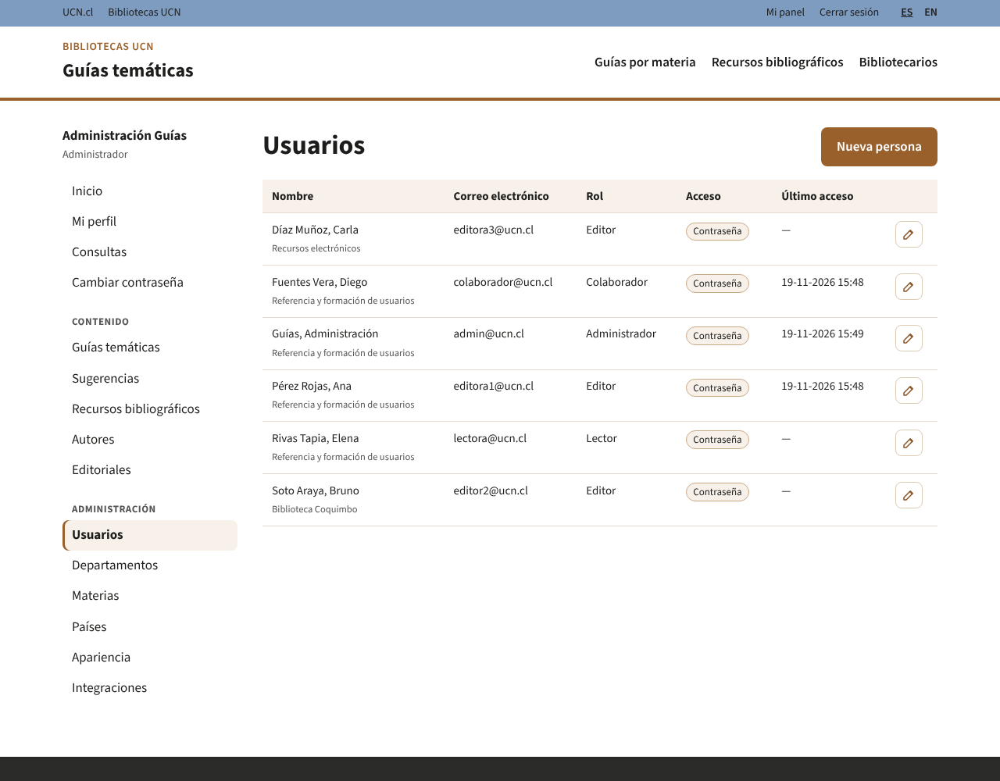
Nueva persona abre el formulario:
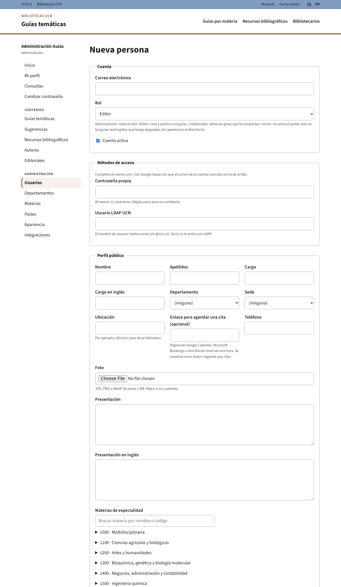
| Grupo | Campos |
|---|---|
| Cuenta | Correo electrónico (con él se identifica), rol, cuenta activa |
| Métodos de acceso | Contraseña propia (mínimo 12 caracteres) y/o usuario LDAP UCN. Para Google basta con que el correo coincida |
| Perfil público | Los mismos datos de Mi perfil, que la persona luego puede completar |
- Roles: Administrador (todo el sitio), Editor (crea y publica sus guías), Colaborador (edita las guías que le compartan) y Lector (no entra al panel; solo ve las guías restringidas que tenga asignadas).
- Dar de baja a alguien: desmarca Cuenta activa. La persona ya no puede entrar, pero sus guías, consultas y revisiones conservan su nombre.
- Olvidó su contraseña: edita la cuenta y escribe una nueva en Contraseña propia; comunícasela por un canal seguro y pídele que la cambie en Cambiar contraseña.
Ejemplo. Llega Javiera, nueva bibliotecaria de
Coquimbo. Creas su cuenta con su correo @ucn.cl, rol
Editor, usuario LDAP jperez (entrará con
su clave institucional), departamento «Biblioteca Coquimbo» y sede
Coquimbo. Ella completa su foto y materias en Mi
perfil.
5.2 Departamentos#
Agrupan al personal en el directorio de bibliotecarios (por ejemplo, «Referencia y formación de usuarios»). Cada departamento tiene nombre, sede y un orden que define su posición en el directorio.
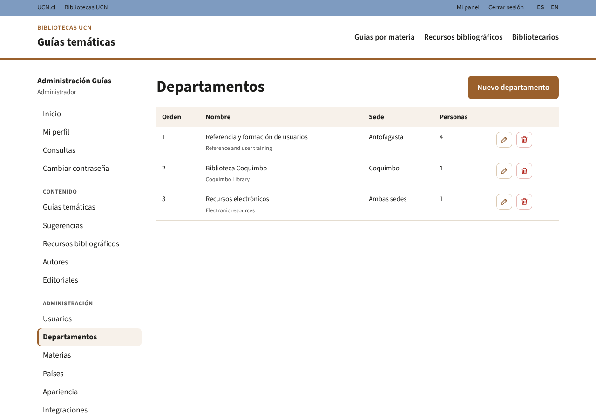
5.3 Materias y categorías ASJC
El esquema de materias se basa en las 334 categorías ASJC de Scopus, agrupadas en 27 campos y 5 grandes áreas. Vienen cargadas y no se pueden eliminar (sí desactivar). Sobre ellas se crean materias propias (carreras, asignaturas, líneas de investigación), que deben quedar clasificadas en al menos una categoría ASJC.
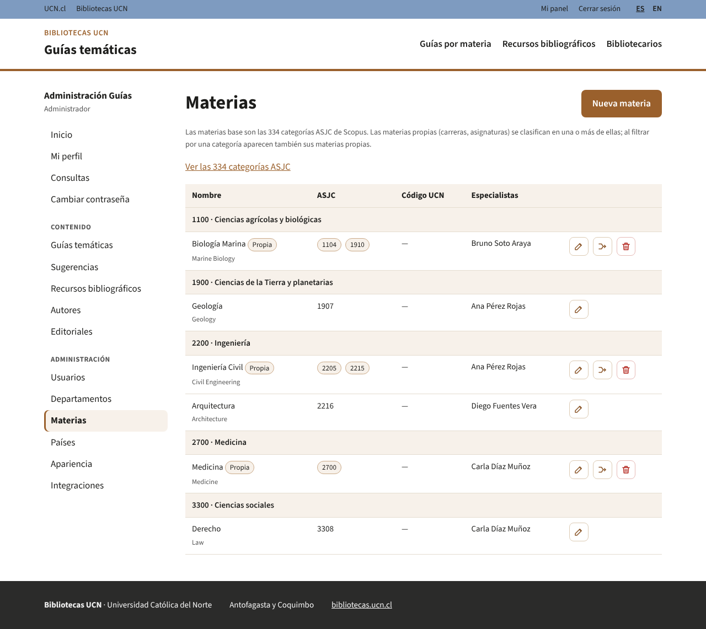
El listado muestra las materias propias y las categorías en uso, agrupadas por campo; Ver las 334 categorías ASJC las muestra todas. Si hay materias propias sin clasificar, aparece un aviso.
Al filtrar por una categoría ASJC en el sitio (guías, lista A-Z, directorio), aparecen también los recursos y guías de las materias propias clasificadas en ella.
Crear una materia propia#
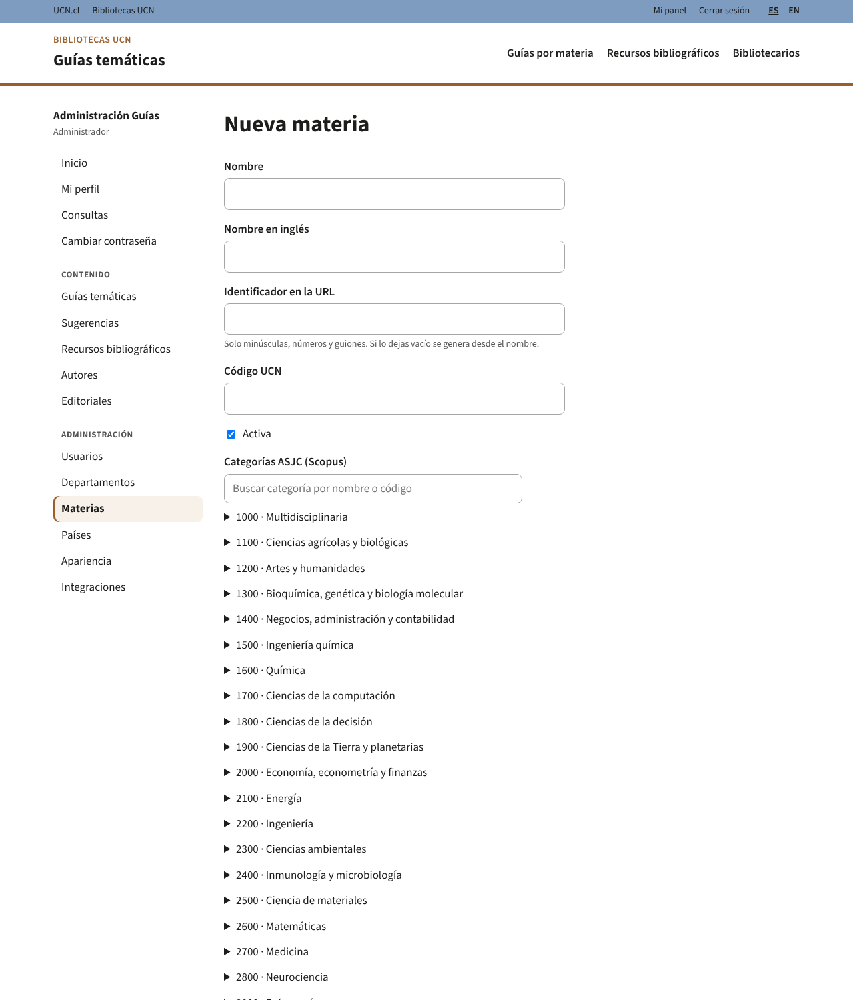
| Campo | Para qué sirve |
|---|---|
| Nombre y nombre en inglés | Cómo se muestra en cada idioma |
| Identificador en la URL | Se usa en los filtros (?materia=…); si lo dejas vacío
se arma con el nombre |
| Código UCN | Opcional, el código interno de la carrera o asignatura |
| Activa | Desmarcada, la materia deja de ofrecerse en los formularios y filtros |
| Categorías ASJC | Al menos una. Usa el buscador por nombre o código |
Ejemplo. Para la carrera «Ingeniería Civil en Obras Civiles»: nombre en inglés «Civil Engineering», el código UCN de la carrera y las categorías 2205 Ingeniería civil y estructural y 1909 Ingeniería geotécnica y geología aplicada (en el buscador basta escribir «civil» o «2205»). Al filtrar por «Ingeniería civil y estructural» en la lista A-Z aparecerán también los recursos de esta carrera.
Homologar una materia propia#
Si una materia propia equivale exactamente a una categoría ASJC, Homologar la reemplaza: sus recursos, guías, especialistas, sugerencias y bloques de búsqueda pasan a la categoría y la materia propia se elimina. Antes de confirmar se muestra cuántos elementos cambian.
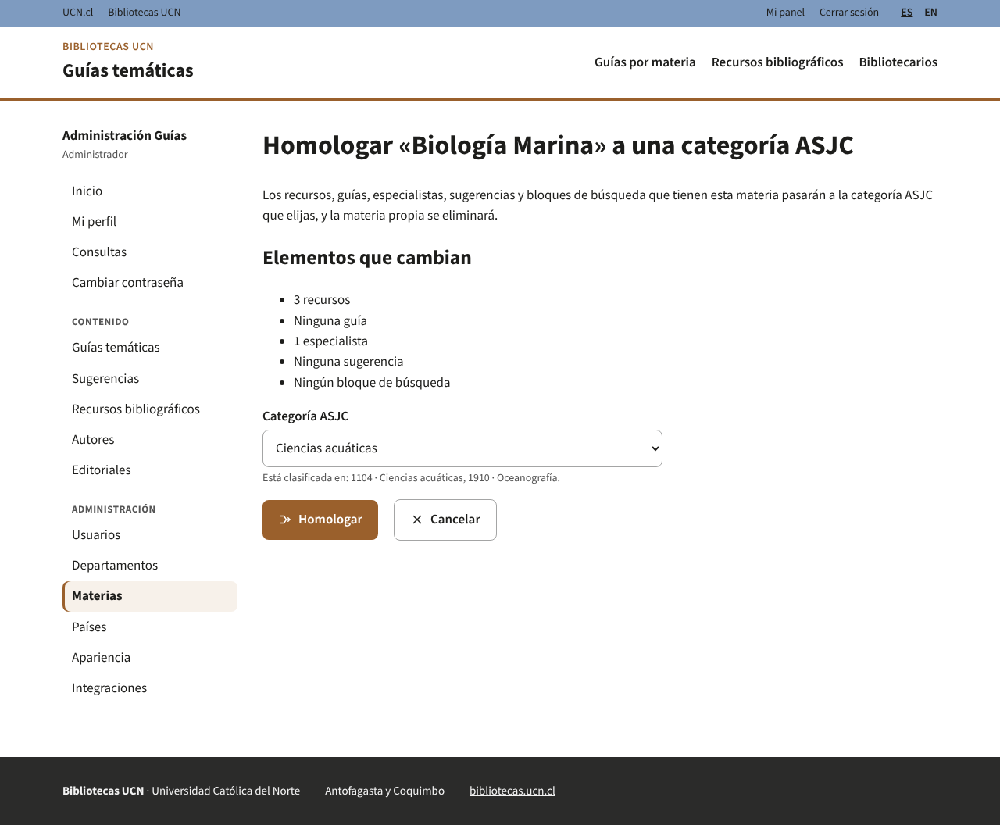
Eliminar una materia propia#
Eliminar abre una página con lo que usa la materia y el campo Reasignar a: elige otra materia (propia o categoría ASJC) para que reciba sus recursos, guías, especialistas, sugerencias y bloques, o No reasignar para solo quitarla. La plataforma propone la categoría ASJC en que estaba clasificada. Esta acción no se puede deshacer.
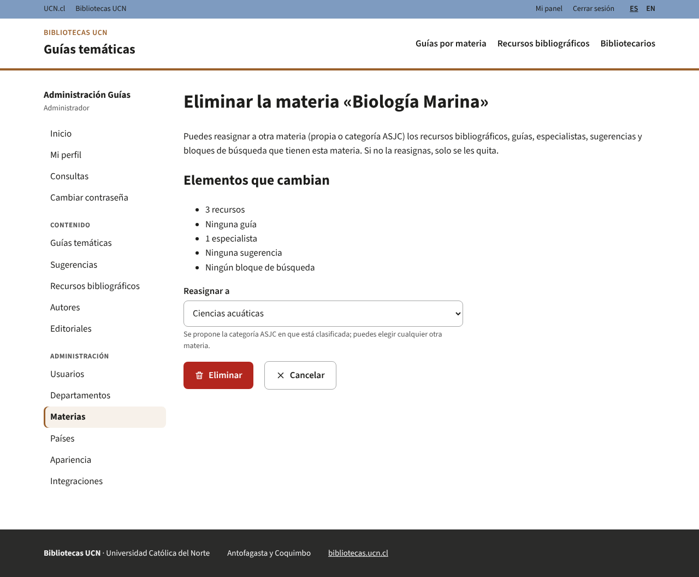
5.4 Países#
Tabla ISO 3166-1 de países (nombre en español e inglés) que usan autores y editoriales. Completar lista ISO repone los que falten.
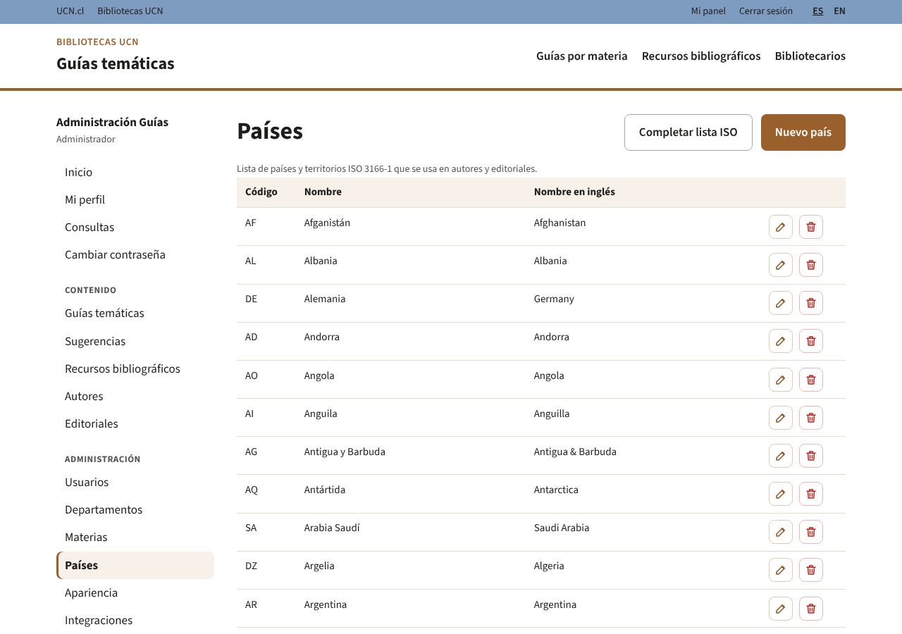
5.5 Apariencia#
Personaliza el sitio sin tocar código. Lo que se deja vacío usa el tema de Bibliotecas UCN.
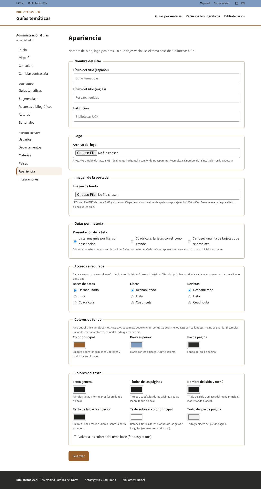
| Grupo | Qué se define |
|---|---|
| Nombre del sitio | Título en español e inglés, e institución |
| Logo | Imagen de la cabecera (PNG, JPG o WebP, mejor horizontal y con fondo transparente) |
| Imagen de la portada | Fondo de la portada (recomendado 1920 × 600 px o más) |
| Guías por materia | Presentación de la lista de guías: lista, cuadrícula de tarjetas o carrusel |
| Accesos a recursos | Para Bases de datos, Libros y Revistas: deshabilitado, lista o cuadrícula. Cada acceso habilitado aparece en el menú principal con su propia página |
| Colores de fondo | Principal, barra superior y pie de página |
| Colores de texto | General, títulos, cabecera, barra, botones y pie |
Cada combinación de color de texto y fondo se valida con el contraste mínimo de accesibilidad (WCAG AA) antes de guardar: si un par no cumple, se indica cuál y no se guarda.
5.6 Guías por materia en la portada
La sección «Guías por materia» del sitio muestra solo guías publicadas y públicas. El filtro Gran área (Ciencias de la salud, de la vida, físicas, sociales y humanidades, multidisciplinaria) aparece solo con áreas que tienen contenido.
5.7 Integraciones#
Integraciones reúne los datos de conexión con
servicios externos. Lo que se deja vacío usa la configuración del
servidor (archivo .env.local, que administra el encargado
de sistemas). Las claves se guardan cifradas y nunca se vuelven a
mostrar: para cambiar una, escribe la nueva.
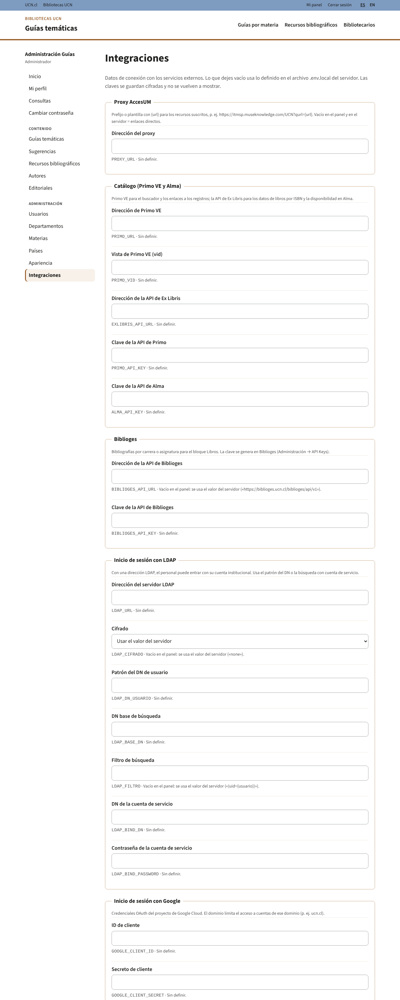
| Grupo | Para qué sirve | Quién entrega los datos |
|---|---|---|
| Proxy AccesUM | Prefijo o plantilla con {url} para abrir los recursos
suscritos desde fuera del campus |
Proveedor del proxy |
| Catálogo (Primo VE y Alma) | Búsqueda en el catálogo, datos de libros y revistas por ISBN/ISSN y disponibilidad de ejemplares | Administrador de Alma / Ex Libris |
| Biblioges | Bibliografía de carreras y asignaturas en el bloque Libros y en el asistente | Administrador de Biblioges (Administración → API Keys) |
| LDAP | Inicio de sesión con la cuenta institucional | Unidad de informática de la UCN |
| Inicio de sesión con Google (ID de cliente OAuth) | Consola de Google Cloud de la institución | |
| Correo (SMTP) | Avisos de consultas a bibliotecarios. El botón Enviar correo de prueba comprueba la configuración | Unidad de informática |
| Inteligencia artificial (Gemini) | Asistente «Nueva guía con IA» | Cuenta de Google AI Studio |
| Moodle (LTI 1.3) | Agregar guías a los cursos de Moodle | Administrador de Moodle |
En la misma página se descarga el plugin de WordPress ya configurado con la dirección del servidor.
Ejemplo. Para activar el correo: en Correo
(SMTP) escribe el servidor, el puerto (por ejemplo 587), el
cifrado (STARTTLS), el usuario y la clave, y el remitente
biblioteca@ucn.cl con nombre «Bibliotecas UCN». Guarda y
presiona Enviar correo de prueba: debe llegarte un
mensaje a tu correo.
Nunca compartas por correo ni en documentos las claves de las integraciones: se escriben solo en esta página.
5.8 Conexión con otros sistemas
Moodle#
La plataforma funciona como herramienta externa LTI
1.3 de Moodle. El administrador de Moodle la registra con estas
direcciones del servidor: inicio de sesión /lti/login,
lanzamiento /lti/lanzar, Deep Linking
/lti/vincular y llaves públicas /lti/jwks. Los
datos que entrega Moodle al registrarla se escriben en el grupo
Moodle (LTI 1.3) de Integraciones. Después, cada
docente agrega «Guías temáticas» como actividad de su curso, elige la
guía, y sus estudiantes la abren desde el curso.
WordPress#
El plugin de WordPress (se descarga desde Integraciones) agrega códigos cortos al sitio de Bibliotecas:
| Código | Muestra |
|---|---|
[guias_ucn] |
La lista de guías |
[guia_ucn slug="ingenieria"] |
Una guía |
[guia_ucn_bloque id="12"] |
Un bloque |
[recursos_ucn] |
La lista de recursos A-Z |
Solo muestra contenido público.
Incrustar bloques y API pública
Cualquier bloque de una guía publicada y pública se puede mostrar en
otra web con Incrustar (3.5). Para
desarrolladores hay una API de solo lectura en JSON:
/api/v1/guias, /api/v1/guias/{dirección} y
/api/v1/recursos.
5.9 Guías de todo el equipo y contenido común
El administrador ve y edita todas las guías. En Datos de la guía puede además:
- cambiar el Responsable (por ejemplo, cuando alguien deja la biblioteca);
- marcar la guía como Guía de contenido común: no se publica, y todos sus bloques y pestañas quedan disponibles para vincular o copiar en las demás guías (bases multidisciplinarias, normas de citación, horarios…).
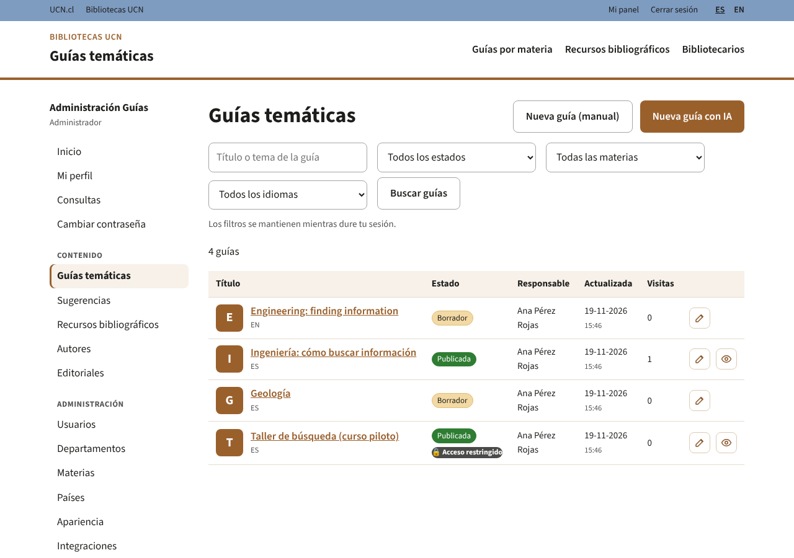
Al final de la página del asistente «Nueva guía con IA», el administrador elige el bloque transversal de bases multidisciplinarias y la pestaña transversal de citación que el asistente vincula en cada guía nueva.
Ejemplo. Crea la guía «Contenido común», márcala como de contenido común y agrega una pestaña «Cómo citar» con bloques de APA, IEEE y Vancouver. En el asistente, elígela como pestaña de citación. Desde entonces cada guía nueva la incluye como vínculo, y un cambio en la original se ve en todas.
5.10 Respaldos y servidores#
Los respaldos diarios, las actualizaciones de versión y el paso de
datos entre servidores (pruebas, piloto, producción) los hace el
encargado de sistemas con los scripts de la carpeta
scripts/ del repositorio (respaldar.sh,
restaurar.sh, desplegar.sh). Están descritos
en el README.md del repositorio.